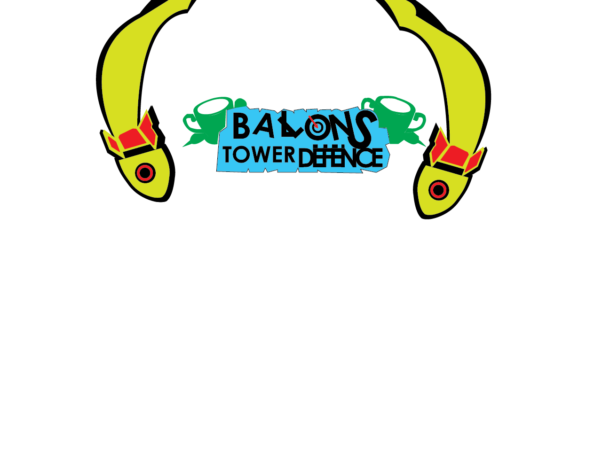
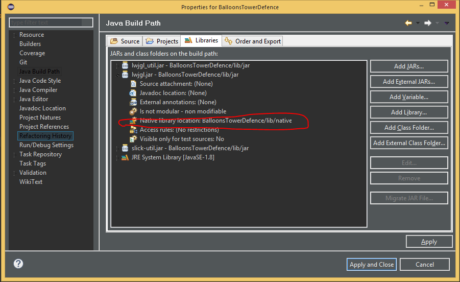
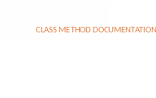

January 19, 2019

Created By: Abinash Singh
For Eclipse it is much simpler to include the needed libraries
|
Libraries |
name |
link |
|
Lwjgl_util.jar |
Lwjgl util |
Same as main and is located inside the zip file |
|
Slick – util.jar library only |
Slick texturing |
http://slick.ninjacave.com/slick-util/ |
|
Lwgl.jar |
Lwjgl main |
https://sourceforge.net/projects/java-game-lib/files/Official%20Releases/LWJGL%202.9.3/lwjgl-2.9.3.zip/download |
All these files are included in the lib folder in the project source
All natives are included for the project in the lib/natives folder

If you import this project or clone it from the Github repository the natives and all ref libs will be in place for you, or if you clone it, and then import the project from the .zip file.
The game is mostly based on the ever popular game Bloons Tower Defense created by Ninja Kiwi
The game reflects some of the concepts presented by its predecessor in which it has:
Place able towers which have different strengths and abilities.
A system in which you may create your own map and paths for the balloons to travel on.
There are some know issues that may affect the gameplay experience (listed later in this document).
A loading screen (Its just there for help with future development, more on this later)
Ability to create custom towers (for now it is only possible through editing the source).
Different balloon types with different heath and speeds.
Though my expectations were merely reached through some of the implementation of concepts that produced high end game design (i.e. multi-threading though I could not find a place to use this at, more on this later).
Some computers may not be able to handle the calculations required in this game if there is a medium amount of load on the system, caused by background tasks like Chrome and Photoshop.
Sometimes the towers will glitch and not shoot the balloons
In the following table, I have listed all the changes I have made to the project since the initial outline
BalloonBlue.java
BalloonRed.java
Dart.java
DartLazer.java
DartNinjaStar.java
DartNormal.java
DartType.java
Entity.java
Explosion.java
Floor.java
FloorGrid.java
FloorType.java
Game.java
HighScore.java
Instructions.java
Leaderboard.java
LevelEditor.java
MainMenu.java
MakeFrame.java
MonkeyTower.java
MonkeyTowerDartMonkey.java
MonkeyTowerIceMonkey.java
MonkeyTowerNinjaMonkey.java
MonkeyTowerSuperMonkey.java
MonkeyTowerType.java
Player.java
Round.java
RoundManager.java
SplashScreenLoading.java
StartGame.java
TestScreen.java
TurningPoint.java
Informal.java
Error.java
DrawInFrame.java
ImageTools.java
LevelToolKit.java
Sprite.java
StateManager.java
Timer.java
Button.java
Image.java
Label.java
ProgressBar.java
Slider.java
UserInterFace.java
Make place able towers
Make a level editor
An algorithm to traverse a path
Basic framework for user interface and game mechanics
Leader boards and user saving
Select map screen
Select difficulty/game mode screen

This class is the super object of all other balloon classes (BalloonRed etc).
It controls most of the tasks needed to perform for the balloon to render on to the screen and is the heart of the balloon framework. Like movement and health, hits and drawing and most importantly rewarding the player money if the balloon is in fact popped.
other.DrawInFrame.DrawQuadWithTexture
other.DrawInFrame.GRID_SQUARE_SIZE
other.DrawInFrame.HEIGHT
other.DrawInFrame.LoadTexture
other.DrawInFrame.WIDTH
other.Timer.Delta
java.util.ArrayList
org.newdawn.slick.opengl.Texture
Entity (Interface)
private static final int MONEY_FOR_KILL = 10;
private int width, height, moneyReward, currentTurnPoint;
private float speed, x, y, health, startingHealth, hiddenHealth;
private Texture instanceTexture;
public BalloonType type;
private Floor startingFloorObject;
private boolean first, alive;
private FloorGrid grid;
private boolean calledChangeMoney = false;
private ArrayList<TurningPoint> turnigPoints;
private int[] directions; // this contains the x and y momentum
constructor a balloon object is created with the following as parameters int
floorX, int floorY, FloorGrid grid, BalloonType type
the balloon is spawned on the floorX and floorY coordinates and the default
values provided by the type specified
constructor a balloon object is created with the following as parameters
Texture instanceTexture, Floor startingFloorObject, FloorGrid grid, int
width, int height, float speed, float health
the balloon is created with a texture and spawned on the startingFloorObject
with a width and height and speed and health
tick is called every loop of the main game loop to update the current factors
of the balloons position and checks if the balloon is alive and gets the next
turning point and moves the balloon depending on the speed and the directions
array
returns true if the turning point has been reached
poped and subtracts a life from the player
damages the balloon object and requires a damage parameter to subtract from
the health if the health is 0 or less then added the specified amount of
money to the player object
findDirection returns a int array which contains two values represent if the
balloon should move in either axis
post: returns a direction array that contains values either 1, 2, 0, -1
representing movement if the value is 1 then the balloon moves by
mulltiplieing the speed and delta by 1 otherwise it returns 2 if the end is
reached and 0 if the movement is not required in either the x or y axis also
it is -1 one if it is going backwards or against the axis in this case if it
is -1 on the 1st index then it is going up on the y axis
Fills the array list of turning point objects containing all directional
object for maneuvering the balloon object it loops through util it finds the
end of the path using a basic guess and check algorithm path finding
algorithm,
post: the turning point list is filled with all the turning points discovered
in the map
Returns an object representing the current turning point by looping through
all possibilites of the checkpoint's location up, down, left, right from the
current location starting floor is the object currently on.
In summary this algorithm is more complicated to explain then to make it
Basically checks if there is a turning point in the direction the balloon is
Going by looking at the dir array passed as a parameter and then sets found
To true if the turning point is found. For example if the x axis movement is
0 and the y axis is 1 then this algorithm checks the floor down 1 times the
Counter so the first one is just 1 down and the next loop the counter is 2
And so it checks the 2nd floor down and if it is a turning point then found
Is set to true and the loop is broken I found some tutorial talking about
This and provided some pseudo code but I couldn't find it again so I am sorry
I can't reference it here
Draws the object on the screen represented by the texture on the screen using
a static method from DrawInFrame
sets alive to false so that the balloon is considered dead and is removed
from the round
reduces the health of the balloon and requires a amount to do by so.